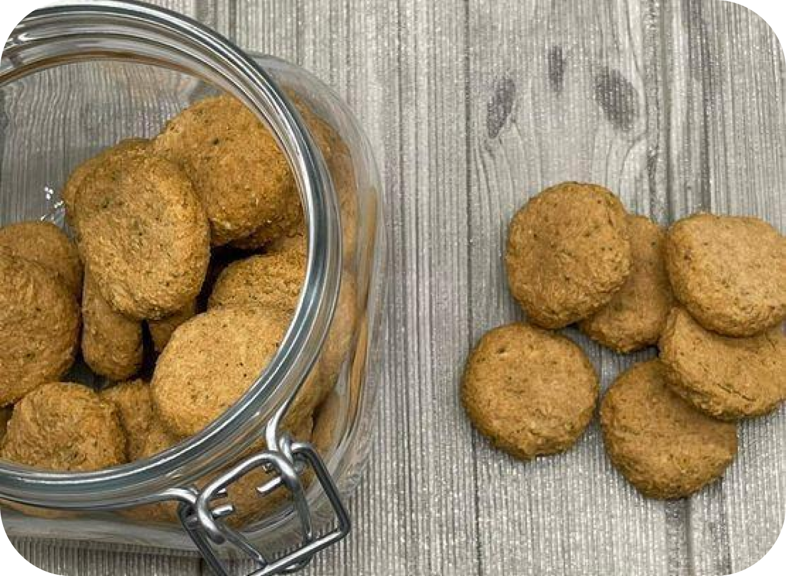

Biscoitinho Saudável de Atum

Ingredientes
1 lata de atum conservado em água e sem sal
1 xícara (de chá) de farinha de aveia
1/2 xícara (de chá) de abóbora fervida
1 ovo
1 colher (de sopa) de azeite
1 colher (de sopa) de catnip seco
Modo de preparo
Bata o milho, os ovos e o azeite no liquidificador até todos os ingredientes ficarem homogêneos.
Coloque a farinha de aveia aos poucos e vá batendo até que tudo esteja misturado.
No copo do liquidificador, coloque o frango ou o patê, a cenoura, o sal, o fermento e mexa com a colher.
Pré-aqueça o forno a 180°.
Para assar o muffin, há algumas opções: use forminhas de silicone com formato redondo, assadeiras para cupcakes ou então você pode colocar toda a massa em uma forma untada e depois cortar no formato que desejar.
Leve ao forno e asse por aproximadamente 30 minutos (vai variar conforme o recipiente que você estiver usando).
Faça o teste do palito e, se sair limpo, está pronto.
Espere esfriar para tirar da forma e coloque em forminhas de papel para bolos